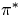

There have been several thermal donor models proposed in the past, notably the O2Sii model [105], the O3i model [249,211], and the OBS model [250].
As the initial concentration of TDs was proportional to [Oi]4, initial models concentrated on defects containing four Oi atoms. Kaiser et al proposed a SiO4 tetrahedral structure [179]. This was believed to become inactive on addition of a fifth Oi, and the model was abandoned when it was discovered that there was a whole family of TDs.
Later work concentrated on trivalent oxygen in different complexes. The strongest contender here is O3i with the central O atom in a `y-lid' trivalent structure (see Figure 9.13). This was originally proposed in 1983 [249], and has been modelled by several groups since [93,251,211]. Since this model features O on the C2 axis it cannot account for TD3 or higher (ENDOR shows no O on the C2 axis), however it could be TD1 or TD2. This was shown using first principle supercell methods to be 0.7 eV lower in energy than three neighbouring BC Oi atoms [211]. This structure was also proposed as a core with two further flanking Oi atoms, forming a 5O species [28] (see Figure 9.11). The central O atom becomes trivalent in response to the compression from the other oxygen atoms, and is the source of the electrical activity. However ENDOR excludes this as a model for TD3+ for the same reasons as the 3O `y-lid' species.
To avoid the problem of O on the C2 axis, a di-y-lid model was proposed by two groups [111,252] (see Figure 9.4), and later work suggested that the `y-lid' trivalent structure discussed above could transform into this with the addition of further Oi atoms [211]. CNDO/S calculations found this to be 1.5 eV unstable with respect to another alternative 4O species, the di-oxy-square [105] (see Figure 9.1), consisting of four trivalent oxygen atoms in two neighbouring squares. This model was also discarded since the donor wavefunction is concentrated on the square structures [252] in disagreement with that deduced by ENDOR. The di-ylid consisting of two oxygen atoms in y-lid configurations without the flanking Oi atoms was modelled, but this is extremely tensile and unstable with respect to other configurations such as the BC dimer [105].
Prior to the ENDOR result that all O lies on the same C2v plane
with no O on the C2 axis, one of the more popular models was the
OSB model, shown schematically in Figure 9.2 [250].
This assumes that oxygen aggregation and compression pushes a core
lattice Si off its site to become a divalent bridging Si atom, which
is the source of the donor activity. The donor can then become
inactive through the ejection of this atom as an interstitial. The
model is compressive along  110
110 and was abandoned in light of
the new ENDOR data.
and was abandoned in light of
the new ENDOR data.
The model that has received strong support in the last few years is the Deák model, shown in Figure 9.3. This consists of two tri-valent oxygen atoms pinning a Sii between them which is divalent [253,105]. The electrical activity comes from the trivalent O atoms, which donate electrons to the empty states on the Sii.
There are several reasons why the Deák model cannot be correct. One problem comes through the bistability of the early TDs, TD1 and TD2, which exhibit isomeric electrically inactive structures [254]. There seems no easy way of reconstructing the Deák model such that the Sii core atom can become fully coordinated. It is possible for several Sii to aggregate in such a way that all of the dangling bonds combine, but not with a single atom. Alternative structures with trivalent Sii were proposed as the inactive forms, since the CNDO calculations gave its dangling bond state in the valence band [253]. However AIMPRO calculations of trivalent Si give this state deep in the band gap [255]. In addition, the vibrational mode agreement of the model with experiment is poor. The corrected calculated CNDO modes lie at 984 and 901 cm-1, when calculated with AIMPRO we get modes at 823.5 and 805.4 cm-1. Experimental modes for TD3 are observed at 999 and 728 cm-1 so the agreement is poor. There are other subtleties, for example ENDOR shows only a single Si atom on the C2 axis whereas this model has two; this has been explained in terms of low electron density on the Sii[256].
In conjunction with this, SiiOi was proposed as the structure of
TD1 which would rapidly migrate and trap an additional Oi. However
Newman points out that SiiOi has been observed and is only
stable to 50  C [257], with a binding
energy of somewhere near 0.8 eV. Thus this is ruled out as a model
for TD1.
C [257], with a binding
energy of somewhere near 0.8 eV. Thus this is ruled out as a model
for TD1.
Various other models have been proposed over the years. It was suggested that an O2 molecule in a vacancy might have double donor character if its antibonding p state crossed the gap[258], but this was disproved with self-consistent local density Greens function calculations of Kelly[259].